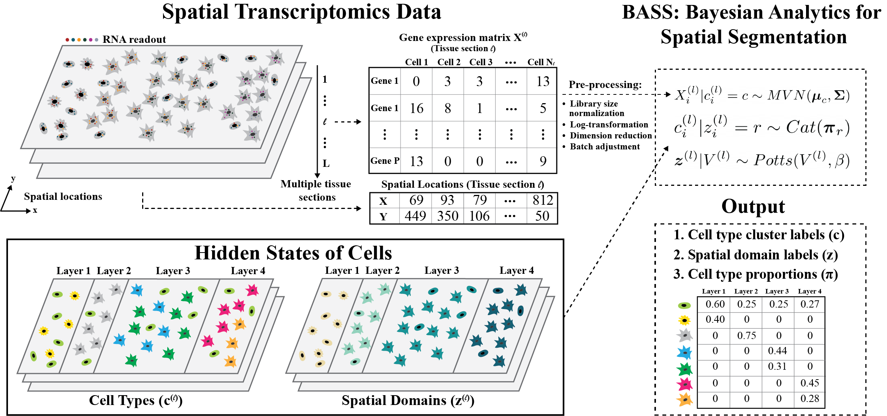

This website maintains code for reproducing simulation and real data application results described in the upcoming paper. For the software, please refer to BASS.
BASS is a method for multi-scale and multi-sample analysis in spatial transcriptomics. BASS performs multi-scale transcriptomic analyses in the form of joint cell type clustering and spatial domain detection, with the two analytic tasks carried out simultaneously within a Bayesian hierarchical modeling framework. For both analyses, BASS properly accounts for the spatial correlation structure and seamlessly integrates gene expression information with spatial localization information to improve their performance. In addition, BASS is capable of multi-sample analysis that jointly models multiple tissue sections/samples, facilitating the integration of spatial transcriptomic data across tissue samples.

BASS relies on a Bayesian hierarchical modeling framework that describes the relationship among gene expression features, cell type labels, spatial domain labels, cell type compositions in each spatial domain, and neighborhood graphs in a hierarchical fashion: \[ \boldsymbol{x}_i^{(l)} | c_i^{(l)} = c \sim MVN(\boldsymbol{\mu}_c, \boldsymbol{\Sigma}) \] \[ c_i^{(l)} | z_i^{(l)} = r \sim Cat(\boldsymbol{\pi}_r) \] \[ \boldsymbol{z}^{(l)} \sim Potts(V^{(l)}, \beta) \] Above, the first equation models the expression feature of the \(i\)th cell on section \(l\), \(\boldsymbol{x}_i^{(l)}\), as depending on its cell type label \(c_i^{(l)}\) with a multivariate normal distribution parameterized by a cell type-specific mean parameter \(\boldsymbol{\mu}_c\) and a variance-covariance matrix \(\boldsymbol{\Sigma}\) that is shared across cell types. The second equation models the probability of the \(i\)th cell belonging to the cell type \(c\) as depending on the underlying spatial domain with a categorical distribution parameterized by the \(r\) domain-specific cell type composition vector \(\boldsymbol{\pi}_r\). The third equation models the spatial domain label of all cells on the section \(l\), \(\boldsymbol{z}^{(l)}\), as a function of the neighborhood graph \(V^{(l)}\) through a homogeneous Potts model characterized by an interaction parameter \(\beta\).
sessionInfo()R version 4.2.0 (2022-04-22)
Platform: x86_64-pc-linux-gnu (64-bit)
Running under: Ubuntu 18.04.5 LTS
Matrix products: default
BLAS: /usr/lib/x86_64-linux-gnu/openblas/libblas.so.3
LAPACK: /usr/lib/x86_64-linux-gnu/libopenblasp-r0.2.20.so
locale:
[1] LC_CTYPE=en_US.UTF-8 LC_NUMERIC=C
[3] LC_TIME=en_US.UTF-8 LC_COLLATE=en_US.UTF-8
[5] LC_MONETARY=en_US.UTF-8 LC_MESSAGES=en_US.UTF-8
[7] LC_PAPER=en_US.UTF-8 LC_NAME=C
[9] LC_ADDRESS=C LC_TELEPHONE=C
[11] LC_MEASUREMENT=en_US.UTF-8 LC_IDENTIFICATION=C
attached base packages:
[1] stats graphics grDevices utils datasets methods base
other attached packages:
[1] workflowr_1.7.0
loaded via a namespace (and not attached):
[1] Rcpp_1.0.8.3 bslib_0.3.1 compiler_4.2.0 pillar_1.7.0
[5] later_1.1.0.1 git2r_0.28.0 jquerylib_0.1.4 tools_4.2.0
[9] getPass_0.2-2 digest_0.6.29 jsonlite_1.8.0 evaluate_0.15
[13] tibble_3.1.6 lifecycle_1.0.1 pkgconfig_2.0.3 rlang_1.0.1
[17] cli_3.2.0 rstudioapi_0.13 yaml_2.3.5 xfun_0.29
[21] fastmap_1.1.0 httr_1.4.2 stringr_1.4.0 knitr_1.37
[25] sass_0.4.1 fs_1.5.2 vctrs_0.3.8 rprojroot_2.0.2
[29] glue_1.6.2 R6_2.5.1 processx_3.5.2 fansi_1.0.2
[33] rmarkdown_2.12.1 callr_3.7.0 magrittr_2.0.2 whisker_0.4
[37] ps_1.6.0 promises_1.1.1 htmltools_0.5.2 ellipsis_0.3.2
[41] httpuv_1.5.4 utf8_1.2.2 stringi_1.7.6 crayon_1.5.0